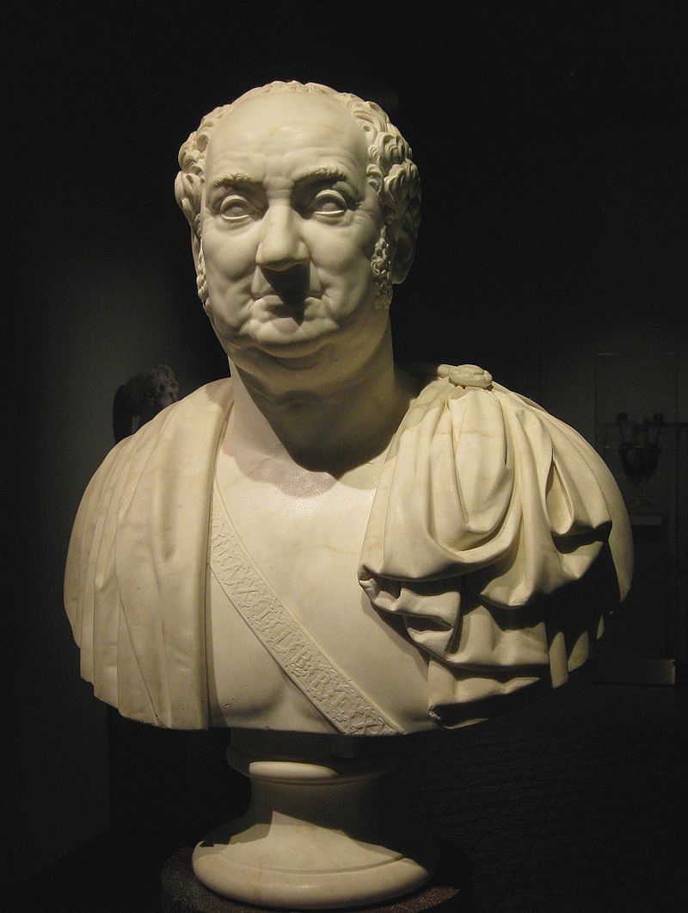
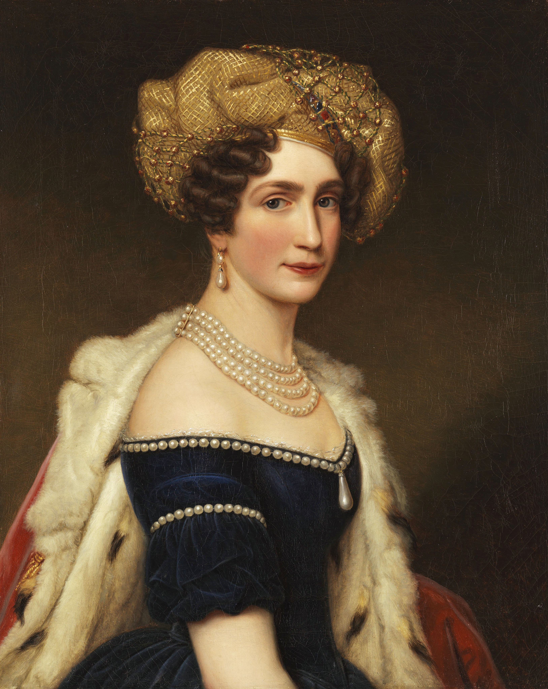
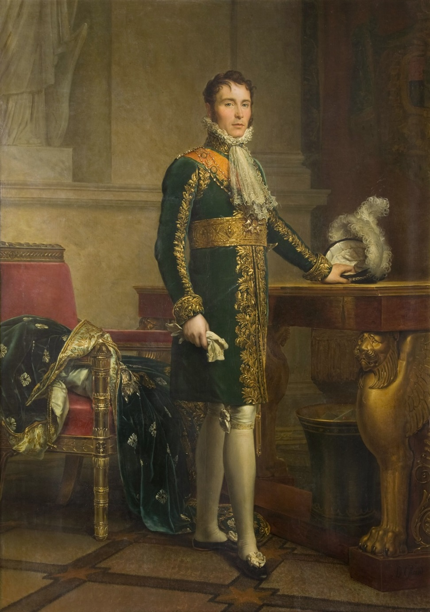
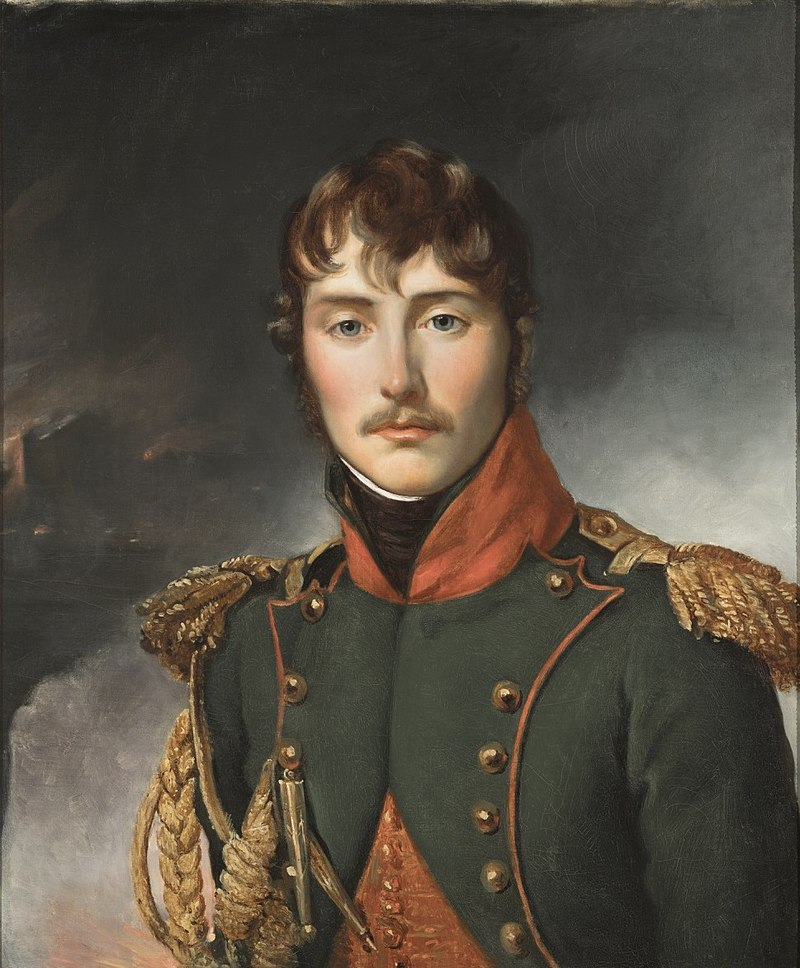
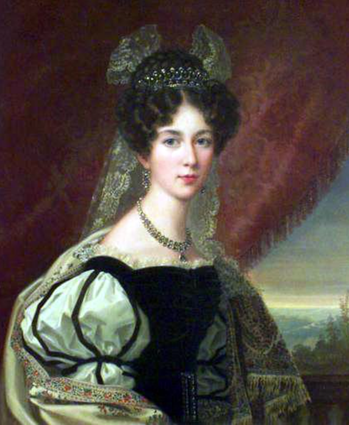

바이에른의 배신 (8) - 외젠의 결혼 (하)
게시: 2024-09-30T06:30:58+09:00
아우스테를리츠의 대승의 결과로 바이에른은 오스트리아로부터 몇몇 영토를 할양받아 덩치가 더 커질 뿐만 아니라, 공국에서 벗어나 이제 왕국으로 인정받기로 이야기가 된 상태였습니다. 그리고 그걸 확정할, 오스트리아와 프랑스가 참여하는 프레스부르크(Pressburg) 협약이 12월 26일 크리스마스 다음 날로 예정되어 있었습니다. 따라서 1805년 뮌헨의 크리스마스 이브는 어느 때보다 기쁜 날이어야 했습니다. 하지만 그날 막시밀리안 1세의 궁정 분위기는 완전 초상집 분위기였습니다. 나폴레옹의 심복인 뒤록(Duroc)이 의전을 갖추고 나타나 공식적으로 외젠과 아우구스타의 혼약을 요청했기 때문이었습니다. 당장 그날은 억지춘향으로 이 공식 사절을 접대해야 했으나, 바로 다음날인 크리스마스에 막시밀리안은 병을 칭하고 드러누웠습니다. 원래 대책이 안 서는 문제가 발생하면 학생이나 월급쟁이로서는 꾀병을 부리는 것이 최상의 대책이긴 했습니다. 하지만 막시밀리안은 학생도 월급쟁이도 아닌 곧 왕이 되실 분이었습니다. 주권자이자 최고 권력자인 왕이 이래서는 안 되었습니다.

(막시밀리안 1세의 흉상입니다. 저렇게 보니까 위엄있어 보입니다만, 사실 막시밀리안은 사람이 좋긴 하지만 결코 결단력이 있는 사람은 아니었다고 합니다.) 일이 이렇게 되자 결혼 당사자인 아우구스타가 직접 등판했습니다. 그녀는 아버지를 만나 상의를 하려했지만 아버지가 병을 핑계로 딸조차 만나지 않으려 하자, 아우구스타는 어쩔 수 없이 편지를 써서 전달했고, 아프다는 아버지는 구구절절 자신의 괴로움과 어쩔 수 없는 입장을 담은 긴 답장을 써보냈습니다. 모두 프랑스어로 적혔던 아버지와 딸 사이의 편지 배달은 장남이자 오빠인 루드비히 왕자가 직접 맡았습니다. 결국 아우구스타는 답장에 대한 답장을 보내면서 거기에 비장하게도 이런 문장을 적어 보냈습니다. "조국을 위해 나를 희생하겠다." 뮌헨 궁정에서 이렇게 비장한 크리스마스를 보낸 것과는 달리, 막시밀리안 1세가 혼인 요청에 대해 공식적으로 승낙 의사를 밝히자 가장 기뻐한 사람은 외젠도 나폴레옹도 아닌 바로 조세핀이었습니다. 조세핀은 이제 아들이 진짜 왕가의 사위가 된다는 사실에 기뻤던 것입니다. 그런데 생각해보면 조세핀 본인이 프랑스의 황후였고 외젠도 공식 황가의 일원이었으니 바이에른 같은 조그마한 예비 왕국의 사위가 된다는 것이 뭐 그렇게까지 기쁜 일은 아니지 않았을까요? 그런데도 엄마 마음은 그게 아니었나 봅니다. 특히 외젠이 나폴레옹 황가의 공식 일원이긴 했지만, 의외로 외젠은 나폴레옹의 공식 아들이 아니었기 때문에 더욱 그랬습니다. 친아들이 아니라 의붓아들에 불과했다는 소리가 아니라, 당시 민법에 따르면 나폴레옹은 공식적으로는 조세핀과 결혼했을 뿐, 조세핀의 아들인 외젠에 대해 자동으로 부자 관계가 맺어지는 것이 아니었던 것입니다. 이건 나름 중대한 의미를 가지는 일이었습니다. 그 때문에 당시 나폴레옹의 궁정에서는 아무도 외젠이 나폴레옹의 뒤를 이어 차기 황제가 될 거라고는 생각하지 않았습니다. 심지어 외젠이 부왕으로 있던 이탈리아 왕국에 대한 계승권조차 없었습니다. 정식 아들이 아니었기 때문이었습니다. 실은 바로 그런 점 때문에 더욱 바이에른 궁정에서는 외젠을 사위로 맞는 것에 대해 거부감을 가졌던 것입니다. 12월 31일, 드디어 나폴레옹이 뮌헨에 입성하여 아우구스타 공주를 처음으로 직접 만납니다. 나폴레옹은 이 우아한 공주와 대화를 나누어 보고는 무척 만족했다고 합니다. 이날 오후 나폴레옹은 외젠에게 편지를 썼는데 이 편지에서 비로소 처음으로 외젠에게 공식적으로 '너 결혼하게 되었다'라고 통보했는데, 이 편지에서 아우구스타 공주에 대해 '상자 속에 든 커피잔 같은 사람'이라는 표현을 썼습니다. 좀 이상한 표현이긴 한데, 아마 커피를 좋아하는 나폴레옹에게는 상당히 좋은 평가였던 모양입니다. 나폴레옹은 이후 며칠간 이 사람 저 사람에게 보내는 편지 속에서 외젠과 아우구스타가 굉장히 잘 어울리는 한쌍이 될 거라고 기뻐하는 마음을 감추지 않았습니다.

(아우구스타 공주의 이 초상화는 외젠이 이른 나이에 병사한 다음 해인 1825년에 그려진 것으로서, 당시 나이 37세였습니다. 여전히 우아하고 기품있는 모습이네요.) 기쁜 일은 계속 이어졌습니다. 바로 다음 날인 1월 1일, 드디어 바이에른이 왕국으로 공식 선포된 것입니다. 이제 막시밀리안 1세는 선제후가 아니라 당당한 국왕이었습니다. 그러나 막시밀리안의 당당함은 궁전 내에서는 계속 찌그러들기만 했습니다. 아우구스타 공주와 카롤리나 왕비 등 여성 식솔들이 다가오는 결혼을 비관하며 자꾸 울었기 때문이었습니다. 사실 카롤리나 왕비의 앙칼진 책망보다는 여성 식솔들의 울음 소리가 우유부단한 성격의 막시밀리안에게는 더 큰 압박이었을 것입니다. 이런 낌새는 나폴레옹에게도 그대로 보고되었습니다. 바쁘기 짝이 없던 나폴레옹은 애초에 외젠의 결혼식을 보고 갈 생각이 없었습니다. 당장 파리로 돌아가 할 일이 태산이었던 것입니다. 가령 파리의 프랑스 중앙은행이 파산 일보직전이었고, 이 문제를 해결하기 위해서는 나폴레옹이 파리로 돌아가 이 금융위기의 원인인 우브라르 (Gabriel Julien Ouvrard) 등의 재벌 군수업자들을 직접 몰아붙여야 했습니다. 그러나 눈치 빠른 나폴레옹은 자기가 만약 이대로 뮌헨을 떠나면 외젠의 결혼이 도중에 엎어질 가능성이 농후하다고 보고, 즉각 외젠에게 급보를 보냅니다. "당장 뮌헨으로 달려오라." 새신랑 외젠이 뮌헨으로 출발했다는 소식이 전해지자 뮌헨 궁정의 긴장감은 점점 높아만 갔습니다. 당장 카롤리나 왕비가 병으로 드러누웠는데, 이 소식을 들은 나폴레옹이 자신의 주치의를 보내주자 왕비는 즉각 완치되어 벌떡 일어났습니다. 대신 궁정 여인들의 곡소리는 점점 높아지기만 했고, 통통한 막시밀리안은 안에서 치이고 밖에서 조여지느라 살이 빠질 지경이었습니다.

(외젠의 1810년 경 모습입니다. 벌써 대머리 기운이 살짝 돌기는 하네요.) 이런 살얼음판에 외젠이 도착한 것은 1월 10일이었습니다. 외젠은 전에도 언급한 것처럼 무척 붙임성이 좋고 유쾌한 청년이었습니다. 1804년 나폴레옹이 황제로 등극한 직후 벌어진 이런저런 행사와 무도회에서 외젠은 사실상 아무런 공식 직함이 없는 깍뚜기였는데, 그럼에도 불구하고 그런 무도회에서 외젠은 귀족이든 평민이든 가리지 않고 많은 사람들과 소탈하게 어울리며 좋은 인상을 주었고 그런 사실이 신문에 실리기도 했습니다. 그런 E형 인간 외젠이 아우구스타와 카롤리나 등을 차례로 만나고나자 뮌헨 궁정의 분위기가 순식간에 바뀌었습니다. 그리고 누가 권고했는지는 불분명하지만, 누군가의 권유에 따라 외젠은 즉각 콧수염을 밀어버렸습니다. 당장 그날 밤부터 여성들의 통곡소리가 뚝 끊겼습니다. 막시밀리안에게는 외젠이 바로 구원자였던 것입니다.

(이 초상화는 1802년 경의 모습입니다. 대체 누가 얘한테 콧수염 바람을 불어넣었는지 모르겠지만, 확실히 깎는 것이 훨씬 나아 보입니다.) 바로 이틀 뒤인 1월 12일, 나폴레옹은 바이에른 궁정에 최후의 선물을 안깁니다. 외젠을 자신의 아들로 정식 입양한 것입니다. 이건 매우 중요한 조치였습니다. 프랑스 제국은 아니어도, 최소한 이탈리아 왕국에 대해서는 외젠이 후계자로 책봉될 가능성이 높아진 것입니다. 실제로 한 달 뒤인 2월 16일, 외젠은 이탈리아 왕국의 후계 예정자(Héritier présomptif)로 공식 선포됩니다. 이제 외젠과 아우구스타의 결혼에 반대하는 사람은 아무도 없었습니다. 이 둘은 바로 다음 날인 1월 13일, 민법에 의한 결혼식을 올렸습니다. 카톨릭 국가였던 바이에른에서는 이 의식은 약혼식이라고 둘러댔고, 바로 다음 날인 14일엔 성당에서 제대로 된 카톨릭 의식에 의한 결혼식이 다시 이루어졌습니다. 15일엔 성대한 축하 무도회가 열렸고, 나폴레옹고 조세핀도 직접 춤을 추었습니다. 그리고 1월 17일, 나폴레옹은 제3차 대불동맹전쟁을 위해 몇 달전 떠났던 파리로 서둘러 돌아갔습니다. 외젠-아우구스타 커플도 1월 21일 밀라노로 떠났는데, 떠나기 전 막시밀리안은 자신의 구세주나 다름없었던 외젠을 몇 번이나 껴안으며 아쉬움을 달랬다고 합니다. 이 젊은 신혼부부는 이후 행복하게 오래오래 살았을까요? 거짓말처럼, 이 둘은 정말 서로를 사랑했고 정말 행복했습니다. 불과 몇 달만에 아우구스타 부왕비는 임신을 하게 되는데, 6월 4일 평소처럼 아우구스타는 사랑하는 오빠 루드비히에게 이 소식을 알리는 편지를 썼습니다. "우리 남편은 정말 오빠에게 자랑스러운 매제야... 지금 열흘째 공무로 궁성을 비우고 있는데, 그 때문에 난 지금 너무나 그이가 그리워. 더 이상 헤어져 있는 거 못 견딜 것 같아. 황제께서는 내가 아이를 파리에서 낳는 것이 어떻겠냐고 하시는데, 완전 잘못 생각하시는 거야. 외젠은 이탈리아 왕국을 오래 비울 수가 없거든. 내가 어떻게 그이와 떨어져 지내겠어?"

(이때 아우구스타 배 속에 들어있던 아이가 첫딸인 조세핀(Joséphine Maximilienne Eugénie Napoléone de Beauharnais)인데, 나중에 스웨덴 국왕 오스카 1세(Oscar 1)와 결혼하여 왕비 로이히텐베르크의 조세핀(Josephine de Leuchtenberg)이 됩니다. 그러니까 외젠의 딸이 베르나도트의 며느리가 되는 것이지요. 역사의 유머 감각이란 참... 뭐라고 해야 할지 모르겠습니다.) 이렇게 외젠과 아우구스타의 행복한 결혼으로 인해 나폴레옹과 바이에른의 결속은 영구적인 것이 되는 것 같았습니다. 그러나 그 결속은 결국 깨집니다. 그 주동자는 바로 아우구스타의 사랑하는 오빠 루드비히였습니다. Source : The Life of Napoleon Bonaparte, by William Milligan Sloane Napoleon and the Struggle for Germany, by Leggiere, Michael V With Napoleon's Guns by Colonel Jean-Nicolas-Auguste Noël https://www.thenapoleonicwars.net/forum/key-figures-of-the-era/eugene-beauharnais-and-the-wittelsbach-family https://en.wikipedia.org/wiki/Princess_Augusta_of_Bavaria https://en.wikipedia.org/wiki/Eug%C3%A8ne_de_Beauharnais https://en.wikipedia.org/wiki/Josephine_of_Leuchtenberg